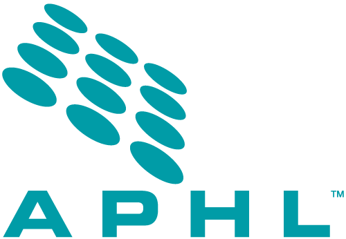

The comprehensive baseline assessment designed to be completed by multiple respondents over 2–4 hours, with different sections answered by the people closest to that work.
This is the full baseline assessment. It is designed to be completed by multiple respondents over two to four hours, with different sections answered by the people closest to that work. A 30-minute pre-engagement version is available separately.
How this works. Sections A through F and H through M apply to every laboratory. Section G contains application-specific modules. Modules will appear or stay hidden based on what you select in Section A.4. Responses are saved in your browser automatically. When you are done, use Review & Export for a text summary or Print / PDF for a formatted record.
If a question does not apply, leave it blank or write N/A. Honest is better than inflated.
A plain-text summary of everything entered. Copy it into an email to your APHL contact, or close and keep editing.